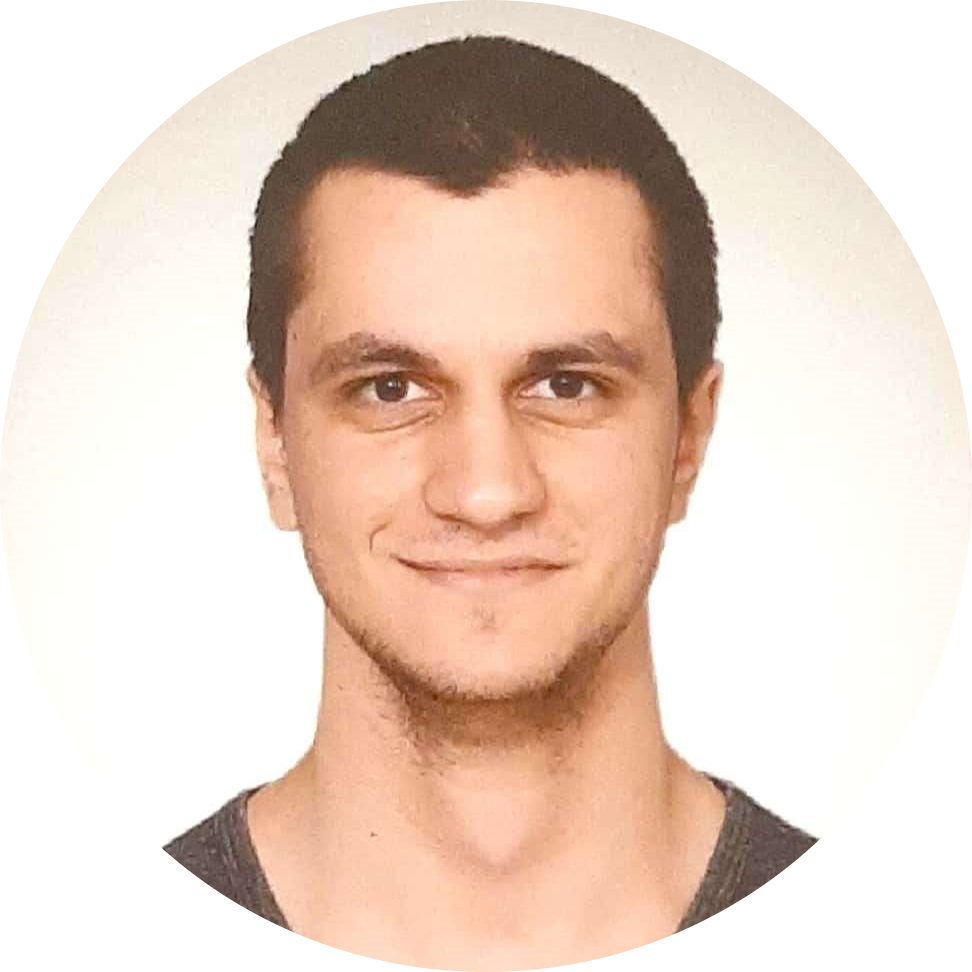

Okyanus Oral - ookyanusmetu@gmail.com
Welcome to my personal webpage! I am a reserach assistant and an M.Sc. student at the department of Electrical and Electronics Engineering, METU, specializing in the signal processing area.
My research interests are, inverse problems, optimization, computational imaging, deep learning, machine learning, and statistical signal processing.
Currently, my thesis studies focus on near-field MIMO Radar imaging using physics-based deep neural networks, which I am supervised by Assoc. Prof. Figen S. Oktem.
Publications (Submitted/Under Review)
O. Oral and F. S. Oktem, “Plug-and-Play Regularization on Magnitude with Deep Priors for 3D Near-Field MIMO Imaging” in IEEE Transactions on Computational Imaging, 2023 (Minor Revision). [arxiv] [code]
O. Oral, M Kiran and BM Ozyildirim, “HPS-RL: A Library for Evolutionary Search for Hyperparameter Search for Optimum Deep Reinforcement Applications” Neural Networks, 2022 (Under Review) [code]
Publications (Accepted/Published)

I. Manisali, O. Oral, and F. S. Oktem, ”Efficient physics-based learned reconstruction methods for real-time 3D near-field MIMO radar imaging”, Digital Signal Processing, vol. 144, p. 104274, 2024, doi: 10.1016/j.dsp.2023.104274. [paper] [code]
O. Oral and F. S. Oktem, "Plug-and-Play Reconstruction with 3D Deep Prior for Complex-Valued Near-Field MIMO Imaging," 2023 31st European Signal Processing Conference (EUSIPCO), Helsinki, Finland, 2023, pp. 496-500, doi: 10.23919/EUSIPCO58844.2023.10290090. [paper]

O. Oral E. L. Oral, and M. S. Andac, ”Comparison of the Performance of K-Nearest Neigh- bours and Generalized Neural Network in Construction Crew Productivity Prediction”, Cukurova University Journal of the Faculty of Engineering, vol. 36, no. 1, pp. 131-140, 2021. doi: 10.21605/cukurovaumfd.933867 [paper]